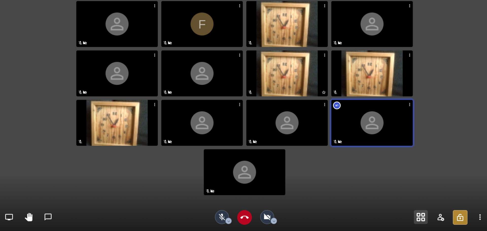
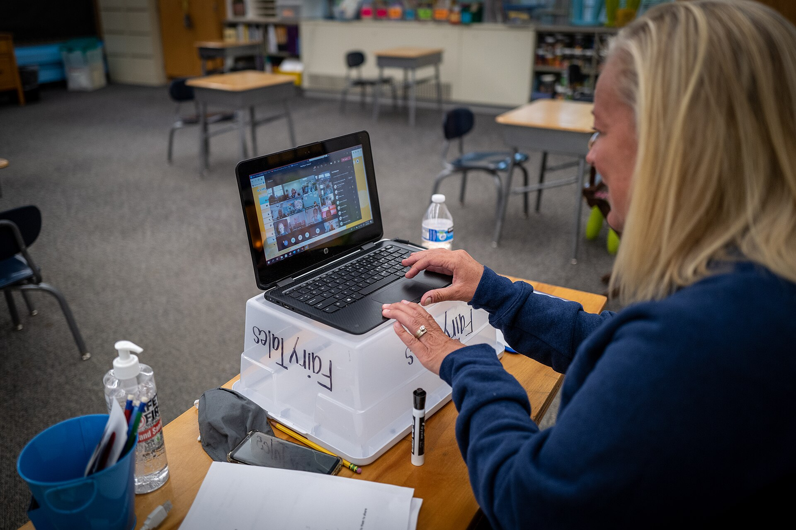

Indépendant · limites et prix lus sur les pages officielles · consulté le 1 oct. 2026
Votre réunion Zoom gratuite s'arrête à 40 minutes. Voici ce que dit réellement Zoom, et les alternatives dont les durées sont écrites noir sur blanc.

Professeurs, associations, freelances, familles : la limite des 40 minutes du compte Zoom gratuit interrompt vos réunions au mauvais moment — et depuis 2022, elle touche aussi les appels à deux. Cette page remet la limite à sa place : ce qu'elle couvre exactement (lu sur la page d'aide officielle), ce qui ne la lève jamais (le compte payant d'un participant, par exemple), et des alternatives gratuites dont nous avons lu les durées sur les pages officielles aujourd'hui.
Limites lues le 1 oct. 2026 sur support.zoom.com, support.google.com, microsoft.com et jitsi.org Aucun lien affilié au lancement
En résumé
- Zoom gratuit : réunion coupée à 40 minutes dès qu'il y a un participant — y compris à deux (depuis 2022).
- Google Meet gratuit : 60 minutes en groupe (3+), 24 h en tête-à-tête (page Google).
- Microsoft Teams gratuit : 60 minutes en groupe, 30 h en appel 1:1 (page Microsoft).
- Jitsi Meet : pas de limite annoncée, open source, sans compte (page jitsi.org).
- Lever la limite chez Zoom : plan payant à partir de 15,99 $/mois/utilisateur (page officielle, facturé mensuellement).
Ce que dit réellement la page d'aide officielle de Zoom
La page d'aide « Understanding time limits for Zoom Meetings » (support.zoom.com, lue le 1 oct. 2026) répartit les durées selon la licence de l'hôte :
- Licence gratuite (Basic), sur compte gratuit ou payant : “Meeting ends after 40 minutes” — presque toutes les réunions programmées ou démarrées par un hôte Basic sont limitées à 40 minutes, y compris “1 host, 1 or more participants” (le cas à deux personnes).
- Réunion démarrée par l'hôte seul : pas de limite de 40 minutes — mais la réunion doit rester active.
- Licence payante (Licensed) : “Meeting ends after 30 hours” — la durée maximale passe à 30 heures.
- Le compte payant d'un participant ne change rien : “Users with Basic (free) licenses on Pro, Business, or Enterprise accounts are limited to the free license meeting durations.” C'est la licence de l'hôte qui compte.
- Une exception documentée : si un Zoom Room payant rejoint la réunion — même depuis un autre compte — “the current meeting session will no longer be limited to 40 minutes”.
Conséquence pratique : inviter « un copain qui a Zoom Pro » ne lève pas la limite. C'est souvent ce que les forums suggèrent à tort ; la règle officielle est la licence de l'hôte.
Ce qu'il faut vérifier avant de décider — 5 étapes
- Identifiez qui héberge chaque réunion récurrente. Cours, réunion d'association, rendez-vous client, appel familial : notez le compte qui lance la réunion (l'hôte). C'est SA licence qui décide de la durée. Si l'hôte est en Zoom gratuit, la coupure à 40 min s'applique même quand des participants ont des comptes payants.
- Mesurez ce qui dépasse réellement 40 minutes. Une réunion de 25 minutes n'a aucune raison de bouger. Dressez la liste des réunions qui durent en pratique plus de 40 min — ce sont les seules concernées par la limite.
- Comparez les durées gratuites sur les pages officielles. Meet gratuit : 60 min en groupe (3+), 24 h en 1:1 (support.google.com). Teams gratuit : 60 min en groupe, 30 h en 1:1 (microsoft.com). Jitsi : pas de limite annoncée (jitsi.org). Les durées ci-dessous sont toutes liées dans les Sources.
- Testez une vraie réunion de plus d'une heure avant de basculer. Un test réel (écran partagé, caméras, invités qui rejoignent depuis un navigateur sans compte) vaut mieux qu'un tableau comparatif. Meet et Teams acceptent les invités via un lien ; Jitsi ne demande aucun compte, y compris aux participants.
- Décidez en connaissance du prix de la sortie. Lever la limite chez Zoom en restant chez Zoom coûte au minimum 15,99 $/mois/utilisateur facturé mensuellement (Zoom Workplace Pro, 1–9 utilisateurs, zoom.com — page tarifaire officielle). Un passage vers une alternative gratuite coûte du temps de migration, pas d'abonnement.
Les alternatives que nous avons vérifiées aujourd'hui
| Outil | Durée gratuite annoncée | Idéal si | Le piège |
|---|---|---|---|
| Zoom (référence) | Gratuit : 40 minutes dès qu'il y a un participant (y compris 1:1 depuis 2022). Payant (licence hôte) : 30 heures. Pro 1–9 utilisateurs : 15,99 $/mois/utilisateur facturé mensuellement (zoom.com, lu le 1 oct. 2026). | Votre écosystème (salle, webinaires, téléphone) est déjà chez Zoom et la limite ne coupe que rarement vos réunions. | Le compte payant d'un participant ne lève pas la limite ; seuls la licence de l'hôte ou un Zoom Room payant le font. |
| Google Meet | Compte Google personnel (gratuit) : 60 minutes en réunion de 3 participants ou plus, 24 h en 1:1, jusqu'à 100 participants (support.google.com, lu le 1 oct. 2026). | Vous vivez déjà dans Google (Gmail, agenda) et vos réunions de groupe dépassent rarement l'heure. | La réunion de groupe se termine à 60 min — redémarrable, mais interrompue ; il faut un compte Google pour héberger. |
| Microsoft Teams | Version gratuite (compte personnel) : 60 minutes en réunion de groupe, 30 h en appel 1:1, jusqu'à 100 participants, 5 Go de stockage (microsoft.com, lu le 1 oct. 2026). | Vos interlocuteurs sont déjà dans l'univers Microsoft et vous voulez le chat + le rendez-vous au même endroit. | 60 min en groupe sur le plan gratuit ; les fonctionnalités avancées (réunions jusqu'à 30 h) demandent un abonnement payant. |
| Jitsi Meet | Pas de limite de durée annoncée : “use all day, every day, for free — with no account needed” (jitsi.org, lu le 1 oct. 2026). Open source (Apache 2.0), chiffré, auto-hébergeable. | La durée illimitée compte plus que tout, ou vous voulez garder la main sur le serveur (auto-hébergement). | Le service public meet.jit.si est une capacité partagée sans engagement de disponibilité ; la qualité dépend de votre connexion et de celle des participants. |
La durée maximale, en clair
Durées annoncées par les éditeurs sur leurs pages officielles, lues le 1 oct. 2026. Barres proportionnelles à la durée en minutes pour les réunions de groupe gratuites.

Zoom ne publie pas de durée pour son plan payant dans le même format (30 h chez Zoom contre 24 h/30 h en 1:1 chez Meet/Teams) : les barres comparent les réunions de groupe gratuites, seules limites comparables publiées. Jitsi n'annonçant aucune limite, sa barre couvre la largeur du graphique — c'est ce que dit sa page officielle.
Chaque durée ci-dessus a été lue sur la page officielle de l'éditeur à la date indiquée, et les pages sont liées dans Sources. Là où un éditeur ne publie pas de chiffre (Jitsi), la page le dit explicitement au lieu de deviner — c'est tout l'objet de ce site.
Qui vous paie pour changer
La catégorie de la visioconférence a des programmes de parrainage. Vérifiés sur les pages officielles ce jour :
- Aucun lien affilié au lancement. Au 1 oct. 2026, aucun lien de cette page ne nous rémunère. Si nous rejoignons un programme (Zoom, Jitsi ou autre) plus tard, les liens concernés seront étiquetés sur place et l'encadré d'honnêteté ci-dessous indiquera la date de début.
Questions
La limite de 40 minutes s'applique-t-elle vraiment à toutes les réunions Zoom gratuites ?
Oui, depuis 2022 cela inclut les réunions à deux personnes. La page d'aide officielle de Zoom est explicite : les réunions hébergées par un utilisateur en licence gratuite (Basic), sur compte gratuit ou payant, se terminent après 40 minutes dès qu'il y a un hôte et au moins un participant. Une réunion démarrée par l'hôte seul, sans participant, n'est pas limitée à 40 minutes (mais elle doit rester active).
Un participant avec un compte payant lève-t-il la limite des 40 minutes ?
Non pour la plupart des cas : la durée dépend de la licence de l'HÔTE, pas des participants. Un hôte en licence gratuite qui invite trois participants payants est quand même coupé à 40 minutes. Une exception documentée : si un Zoom Room payant rejoint la réunion (même d'un autre compte), la session n'est plus limitée à 40 minutes.
Quel plan Zoom lève la limite de 40 minutes ?
Tous les plans payants (licence attribuée à l'hôte) : les réunions peuvent alors durer jusqu'à 30 heures. Le prix d'entrée publié sur la page officielle de Zoom est de 15,99 $/mois par utilisateur facturé mensuellement pour Zoom Workplace Pro (1 à 9 utilisateurs).
Google Meet gratuit coupe-t-il aussi les réunions ?
Oui, en réunion de groupe : la page d'aide officielle de Google annonce 60 minutes pour les réunions de 3 participants ou plus avec un compte personnel gratuit, et 24 heures pour les appels en tête-à-tête. Au bout d'une heure, la réunion de groupe se termine — vous pouvez la relancer avec le même lien.
Quelle alternative gratuite n'a pas de limite de durée ?
Jitsi Meet : la page officielle (jitsi.org) annonce un usage illimité sans compte obligatoire, le projet est open source et auto-hébergeable. Google Meet et Microsoft Teams, dans leurs versions gratuites, limitent les réunions de groupe à 60 minutes (les appels 1:1 vont jusqu'à 24 h chez Google, 30 h chez Microsoft).
Les liens de cette page sont-ils des liens affiliés ?
Non au lancement : au 1 octobre 2026, aucun lien de cette page ne nous rémunère. Si cela change, chaque lien concerné sera étiqueté sur place et l'encadré d'honnêteté indiquera la date de début.
Comment les chiffres de cette page ont-ils été vérifiés ?
Chaque limite et chaque prix a été lu sur la page officielle de l'éditeur le 1 octobre 2026 (support.zoom.com, zoom.com, support.google.com, workspace.google.com, microsoft.com, jitsi.org), avec la date de contrôle indiquée à côté et liée dans Sources.
Comment cette page reste honnête
- Aucun lien affilié au lancement. Au 1 oct. 2026, aucun lien de cette page ne nous paie. Si nous rejoignons un programme plus tard, les liens concernés seront étiquetés sur place et cet encadré indiquera la date de début.
- Chaque durée et chaque prix a été vérifié sur la page officielle de l'éditeur le 1 oct. 2026, avec la date de contrôle indiquée à côté et liée dans Sources. Vérifiez-les vous-même.
- Pas de chiffres inventés, pas d'urgence factice. Là où un éditeur ne publie pas de durée (Jitsi, plan payant de Zoom), la page le dit exactement au lieu de deviner. Le graphique ne barre que des durées publiées.
- Une erreur ou une nouvelle limite repérée ? Écrivez-nous — les corrections partent vite.
Sources
Les dates de contrôle sont indiquées par lien. Pages éditeurs consultées le 1 oct. 2026.
- Zoom — Understanding time limits for Zoom Meetings (page d'aide officielle) (lue le 1 oct. 2026 : Basic 40 min, Licensed 30 h, la licence de l'hôte fait la règle)
- Zoom — Zoom Workplace Pro (page produit officielle) (lue le 1 oct. 2026 : Pro 1–9 utilisateurs, 15,99 $/mois/utilisateur facturé mensuellement)
- Google — Learn about features in Google Meet (page d'aide officielle) (lue le 1 oct. 2026 : 1:1 jusqu'à 24 h, groupe 3+ jusqu'à 1 h)
- Google — Meet, page produit (lue le 1 oct. 2026 : gratuit, jusqu'à 100 participants, 60 min par réunion)
- Microsoft — Teams gratuit (page officielle) (lue le 1 oct. 2026 : réunions de groupe 60 min, appels 1:1 30 h, 100 participants)
- Jitsi — Jitsi Meet (page officielle) (lue le 1 oct. 2026 : gratuit, sans compte, aucun plafond de durée annoncé, open source Apache 2.0)
- Guides liés : Honest Switch — comparatif honnête (Harvest, QuickBooks, Invoice Radar) · Alternatives à AnyDesk · Newsletter platform switchers
Avis clients
Avis sur ce guide, publiés après vérification. Chaque avis négatif reçoit une réponse publique — c'est comme ça qu'on s'améliore.
Les premiers avis seront publiés ici dès que de vrais lecteurs en enverront.